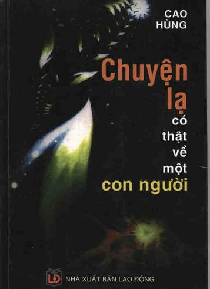

Kể từ năm 1998, tác giả Cao Hùng - một sĩ quan cao cấp quân đội đã nghỉ hưu, một nhà nghiên cứu lịch sử có kinh nghiệm đã cùng một số trí thức Hà Nội, nhiều lần ra vào tỉnh R để nghiên cứu một hiện tượng đặc biệt: Đ. V. T - nhân vật của cuốn truyện ký này. Nhóm các nhà nghiên cứu đã ăn, ở, ngủ lại, để theo (hay nói đúng ra bị “hút hồn”) bởi chính nhân vật cuốn truyện - một người bằng xương bằng thịt như mỗi chúng ta, nhưng lại có nhiều khả năng đặc dị. Chứng kiến những điều tai nghe, mắt thấy, tác giả muốn phản ảnh một cách khách quan, chân thật các hiện tượng lạ có thật để các nhà khoa học trong các lĩnh vực khác nhau suy nghĩ, nghiên cứu tìm câu trả lời.
Con người - tổng hòa các mối quan hệ xã hội - tiềm ẩn nhiều khả năng kỳ diệu ở nhiều góc độ khác nhau, chẳng hạn khả năng điều chỉnh sức khỏe bằng hai bàn tay, khả năng chẩn đoán bệnh không cần tiếp xúc người bệnh, khả năng tự chữa trị bệnh cho mình, khả năng dự báo trước một số hiện tượng, sự việc sẽ xảy ra trong tương lai gần, v.v...
Ngoài những thông tin chân xác về những điều kỳ diệu ở một con người Việt Nam bé nhỏ, là nhân vật trong tập sách này - mà tác giả đem đến - chúng ta vẫn cảm thấy trăn trở trước việc thờ ơ của các cơ quan chức năng - gần như chưa có một ai, một chương trình, một cơ quan nào đứng ra nghiên cứu để làm giàu kiến thức, làm giàu dữ liệu cho khoa học.
Cuốn sách chứa nhiều thông tin - dữ liệu quan trọng sẽ có ích cho công việc nghiên cứu con người nói riêng và sự sống nói chung - những lĩnh vực mà khoa học đã và đang khám phá. Tuy nhiên, vẫn còn nhiều hiện tượng, nhiều thuật ngữ y học mà tác giả mô tả hoặc ghi nhận chưa thật chính xác so với thuật ngữ chuyên môn, v. v. Bỏ qua những hạn chế này chúng ta vẫn có được một truyện ký hay, và có lẽ, truyện ký này cũng đã đạt một 'kỷ lục" về thời gian trong lịch sử viết truyện ký ở ta khi tác giả đeo bám nhân vật tới 6 năm ròng.
Nhà xuất bản xin giới thiệu cùng bạn đọc cuốn truyện ký: Chuyện lạ có thật về một con người và xem nó như là một món quà nhằm đánh thức những khả năng tiềm ẩn trong mỗi bạn đọc. Chừng mực nào đó cũng là mong muốn hãy trân trọng và giúp đỡ những biệt tài ở giữa chúng ta.
Hà Nội, tháng 6 năm 2006
NHÀ XUẤT BẢN LAO ĐỘNG